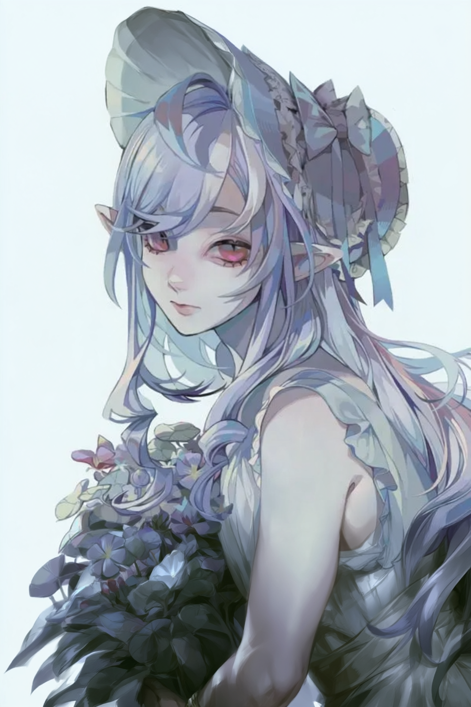
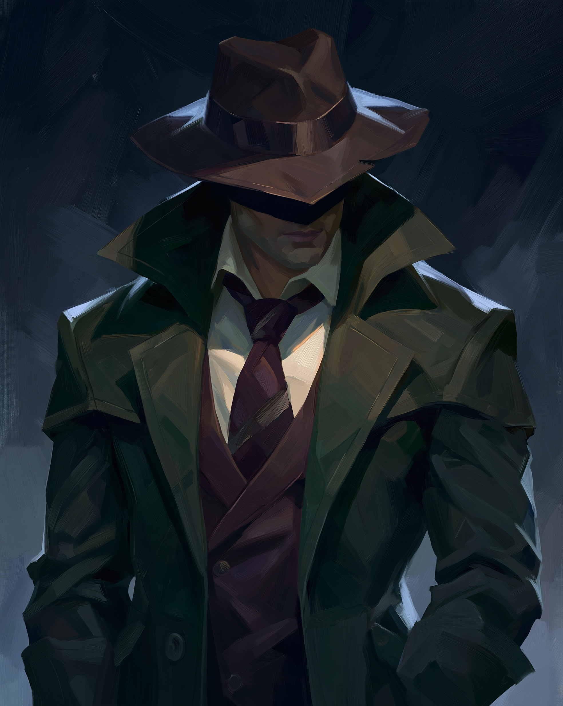
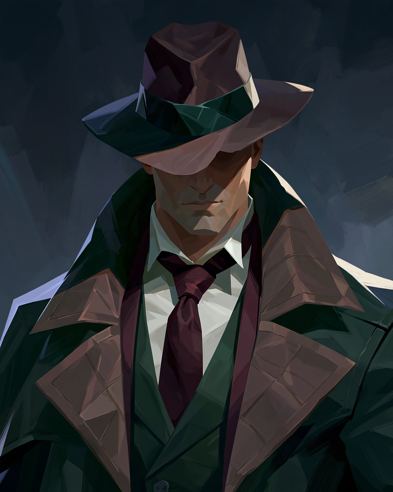
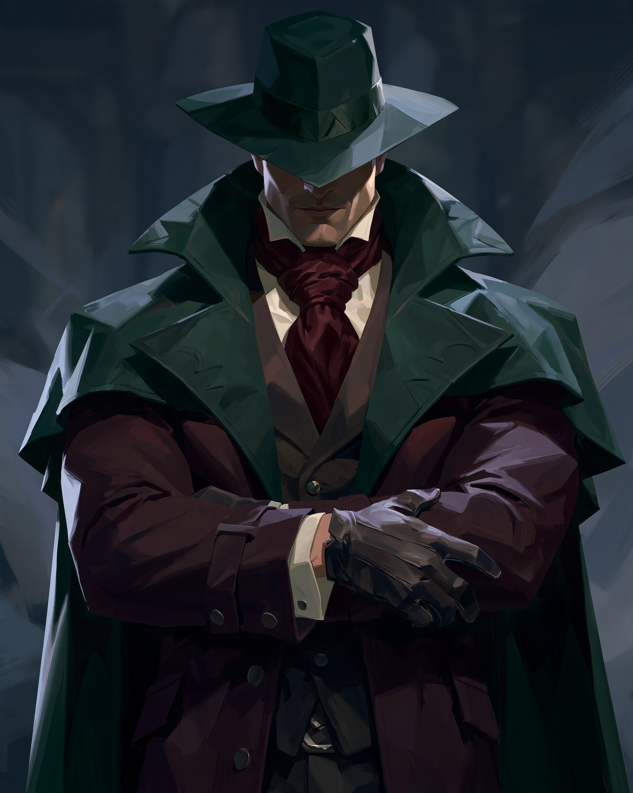

01

ZUZIA
Bard, Kolegium Duchów
Polter von Geist
Półelfka, która nauczyła się słuchać tego, czego inni wolą nie słyszeć. Duchy mówią przez nią pieśnią — a ona nie zawsze ma wybór, by milczeć.
„W ślepych murach, martwych, tylnych ścianach domów […] błękitny dym wybuchał. Wązkie ulice […] istne szpary między rzędami wysokich kamienic…”
— Stefan Żeromski, Popioły
Półelfka, która nauczyła się słuchać tego, czego inni wolą nie słyszeć. Duchy mówią przez nią pieśnią — a ona nie zawsze ma wybór, by milczeć.

Postać nie została jeszcze uzupełniona na stronie kampanii.

Postać nie została jeszcze uzupełniona na stronie kampanii.

Postać nie została jeszcze uzupełniona na stronie kampanii.